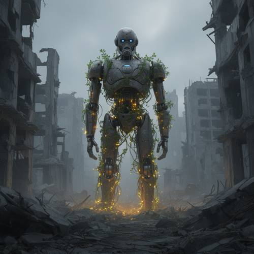
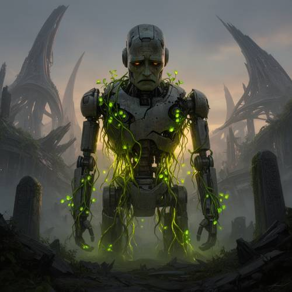
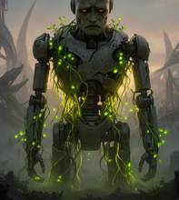

Attribute — In the ruins of an abandoned alien city, a huge robot statue looked sa
In the ruins of an abandoned alien city, a huge robot statue looked sad. Its metal body was wrapped around glowing plant vines, and vines grew out of cracks in the body.

Direct — one call, no iteration

Continuum — Qwen3.8-27B + FLUX.2-dev
Judge — Direct
FAILAttribute - Expression — The robot has a static, metallic face with glowing blue eyes and a grated mouth area. The structure of its face is neutral and does not convey an expression of sadness.
PASSGrammar - Consistency — Green vines are wrapped around the robot’s torso, legs, and shoulders. Vines are also shown emerging from the gaps and seams in the robot’s internal structure, particularly in the abdominal region.
PASSCompound - Imagination — The image features a huge, humanoid robot standing in a city of crumbling, ruined buildings. The vines wrapped around the robot are interspersed with small, glowing yellow lights.
Judge — Continuum
PASSAttribute - Expression — The robot's facial features, including a downward-turned mouth and furrowed brows, convey a clear expression of sadness.
PASSGrammar - Consistency — Glowing green vines are wrapped around the robot's torso, shoulders, and legs. Vines are also shown emerging from various cracks and joints in the robot's metal body, such as on its chest and shoulders.
PASSCompound - Imagination — The image depicts a large, humanoid robot statue in the foreground. In the background, there are dilapidated, fantastical structures consistent with the ruins of an alien city. The vines covering the robot have leaves that emit a bright green glow.
What the agent did
Thinking
The user is asking for an image: "In the ruins of an abandoned alien city, a giant robot statue looks sad. Its metal body is wrapped in glowing plant vines, and vines grow out of the cracks in the body." This is a creative image generation task. Let me generate the image with flux2-dev. Let me think about the visual details: - Ruins of an abandoned alien city — futuristic/architectural alien structures, broken towers, strange geometry - Giant robot statue — large-scale, monumental - Sad expression — drooping eyes, downturned brow - Metal body wrapped in glowing plant vines - Vines growing out of cracks in the body This is an evocative prompt. Let me generate it with a detailed prompt. Let me make the generation prompt: "A giant sad robot statue standing in the ruins of an abandoned alien city, weathered metal body, gentle sorrowful facial expression, glowing bioluminescent green plant vines wrapped around the metal torso and arms, luminous vines and roots growing out of cracks in the metal plating, broken alien architecture in the background, overgrown vegetation, soft moody lighting, mist, dramatic atmosphere, detailed concept art style" Let's go with that. The image size is fixed — the default is 1024x1024. After that, inspect, edit as needed, and mark as best.
Step 1 — `generate_image`
{
"prompt": "A huge sad robot statue standing in the ruins of an abandoned alien city. The monumental robot has a sorrowful, downcast face with drooping eyes and a slightly downturned mouth, weathered ancient metal body. Glowing bioluminescent green plant vines are wrapped around its metal torso, shoulders and arms, luminous roots and tendrils growing out of cracks and gaps in the metal plating. Background: collapsed alien architecture with strange curved spires and broken monoliths, overgrown with vegetation, soft mist, moody twilight lighting with the vines casting a warm green glow, cinematic detailed concept art.",
"model": "flux2-dev"
}
Result img_0
Thinking
The image came out pretty well. Let me check the details: 1. Giant robot statue — yes, big, monumental. ✓ 2. Sad expression — face looks solemn and downcast, eyes glowing orange. Looks reasonably sad, though the eyes glow orange, which might be fine (the eyes are a different color from the vines). ✓ 3. Ruins of an abandoned alien city — yes, in the background there are alien spires and broken structures. ✓ 4. Glowing plant vines wrapped around the metal body — yes, green glowing vines wrapped around the torso and arms. ✓ 5. Vines growing out of the cracks in the body — vines appear to be emerging from the torso area and the joints. ✓ Let me zoom in to check the face and the details of the vines on the cracks. The face looks good — sad. One thing that concerns me: the robot looks like it's standing with its lower half partially hidden in mist, but that's fine. Let me inspect the face region and check the sadness and quality.
Model
The first generation is close to the prompt. Let me inspect the key details — the face (sadness) and the vines in the cracks — before deciding.
Step 2 — `inspect_region`
{
"image": "img_0",
"roi": "the robot's face",
"padding": 0.1
}
Result img_1
Step 3 — `inspect_region`
{
"image": "img_0",
"roi": "the glowing vines on the robot's chest and arms",
"padding": 0.1
}
Result img_2

Thinking
The face is really sad — furrowed brows, downturned mouth, melancholic. The glowing vines wrap around the torso and arms, and there are also vines that appear to be coming out of cracks in the chest plate (you can see cracks in the metal and vines growing from them). Everything the prompt is asking for is there: 1. Ruins of an abandoned alien city ✓ (alien spires, broken monoliths, mist) 2. Giant robot statue ✓ 3. Sad ✓ (clearly sorrowful face) 4. Metal body wrapped in glowing plant vines ✓ (vines wrapped around the torso/arms, glowing green) 5. Vines growing out of cracks in the body ✓ (vines emerging from cracks in the chest plate, small glowing buds) The image is really good. No text to verify. The image matches the prompt well. I should mark this as the best and be done. It's a strong result, so there's no need to push the editing further. Alright, let's mark img_0 as the best.
Model
Everything in the prompt is there and reads clearly: - **Sad face**: furrowed brow, downturned mouth, melancholy gaze — unmistakably sorrowful. - **Giant robot statue**: monumental scale, weathered ancient metal. - **Abandoned alien city**: broken curved alien spires and fallen monoliths in misty twilight. - **Glowing vines wrapped around the body**: bioluminescent green vines winding around the torso, shoulders, and arms. - **Vines from cracks**: roots and tendrils visibly bursting out of the cracked chest plating and joints, with small glowing buds. This is a strong result that matches the description on every point, so I'll mark it and stop.
Step 4 — `mark_best`
{
"image": "img_0",
"reason": "All prompt elements present and verified by crop inspection: huge sad robot statue in ruined alien city, glowing vines wrapped around the metal body and growing out of cracks in the plating."
}
Thinking
Done. The best image has already been marked as img_0. Let me give a concise final reply.
Model
Done. The final image shows a huge robot statue in the ruins of an abandoned alien city, its weathered metal body wrapped in glowing green vines that also sprout from cracks in the plating, with a clearly sorrowful expression — all against misty, broken alien spires at twilight. The result was verified by zooming into the face and vine details, and it's marked as the best.